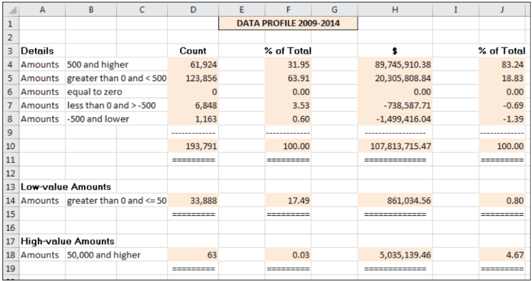
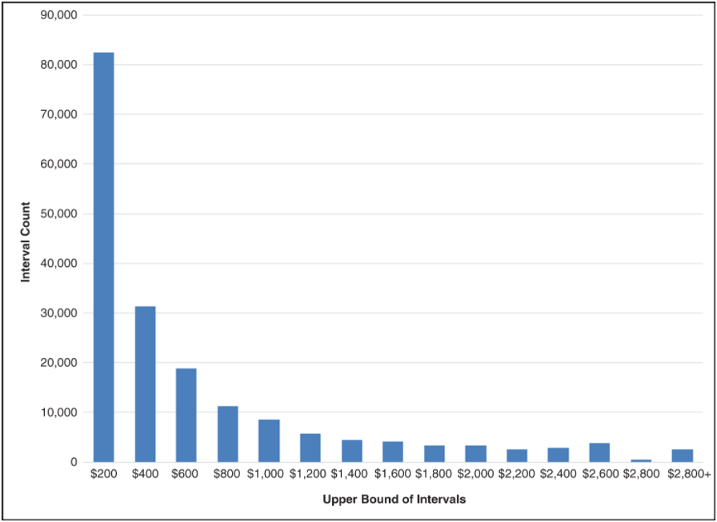
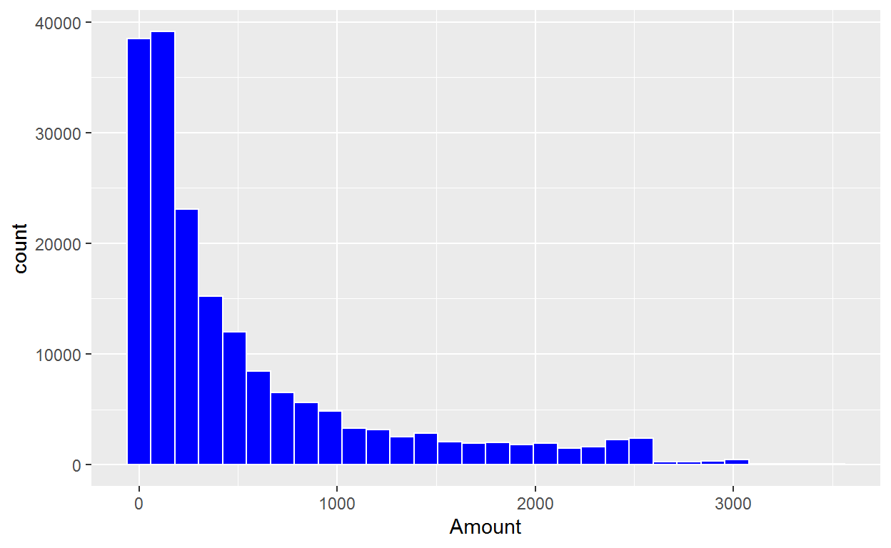
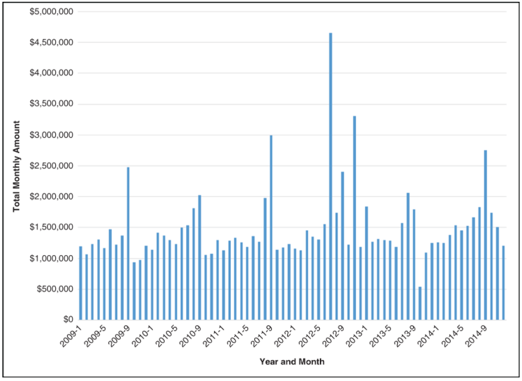
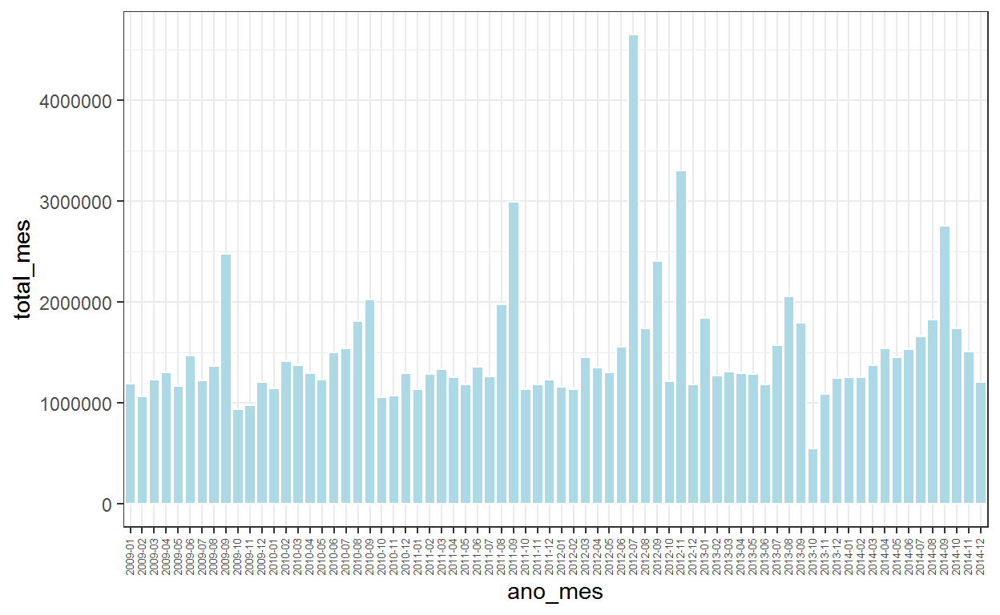
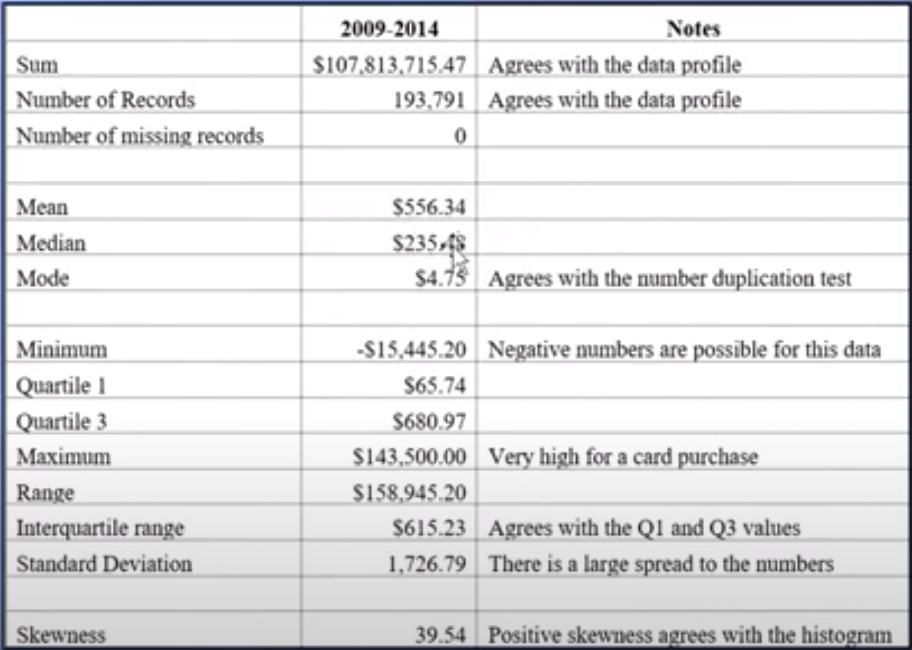

Implementação em R dos “testes” apresentados no Capítulo 2 do livro Forensic Analytics 2a Ed. do Mark Nigrini
Neste post nosso objetivo é mostrar como implementar no R as análises contidas no capítulo 2 da segunda edição do livro Forensic Analytics do Mark Nigrini.
Neste capítulo o autor apresenta o que ele chama dos “quatro testes de visão geral” que tem por objetivo a obtenção de uma compreensão geral dos dados e eventualmente de alguns insights para guiar análises posteriores.
Trata-se, essencialmente, da aplicação de Análise Exploratória de Dados que deve preceder sempre qualquer análise de dados.
Esses “quatro testes” são os seguintes: (a) perfil dos dados, (b) histograma, (c) gráfico de período e (d) estatísticas descritivas e, nos dizeres do autor, esses quatro testes formam a base de uma auditoria forense orientada a dados.
O autor possui uma playlist no YouTube onde faz uma rápida revisão dos capítulos do livro e o link a seguir é para o vídeo relativo ao Capítulo 2.
https://www.youtube.com/watch?v=ibFG3Zn9-UQ&list=PLqQLvWWovXwUBF3YAbSGjUxKpgETwuRQR&index=4
Vamos mostrar como implementar no R cada um dos “testes” apresentados no capítulo.
O primeiro passo é realizar a importação dos dados que estão armazenados em uma planilha do Excel chamada PCard_Data2009-2014.xlsx.
O conjunto de dados utilizado no capítulo diz respeito a transações realizadas com cartões de crédito corporativo. Mais especificamente dados de compras do distrito de Columbia compreendendo o período de 2009 a 2014.
Vamos importar os pacotes que precisaremos para nossas análises.
Feita a importação dos pacotes, passamos à importação dos dados que, por estarem armazenados em uma planilha do Excel, serão importados com a função read_excel() do pacote readxl.
# Impotação dos dados
pcard <- read_excel("PCard_Data2009-2014.xlsx")
# Inspeção dos dados
glimpse(pcard)
Rows: 193,791
Columns: 6
$ Date <dttm> 2009-01-02, 2009-01-02, 2009-01-02, 2009-01-02,~
$ Amount <dbl> -1700.00, -23.16, 9.48, 24.61, 31.65, 71.10, 100~
$ Merchant <chr> "WASHINGTON HISPANIC", "STAPLES DIRECT00209908",~
$ State <chr> "MD", "CA", "WA", "DC", "NY", "MD", "NJ", "CA", ~
$ Description <chr> "Advertising Services", "Stationery,Office Suppl~
$ Agency <chr> "Department of Motor Vehicles", "Metropolitan Po~A saída da função glimpse() do pacote dplyr já nos fornece um conjunto interessante de informações sobre esse conjunto de dados. De início já é possível saber tratar-se de um conjunto de dados que possui 193.791 linhas ou registros ou observações e 6 colunas ou variáveis.
Para cada variável temos informações sobre o tipo de dado de cada variável. Por exemplo, a variável Date é do tipo data, a variável Amount é numérica e todas as demais são caracteres.
Toda análise de dados requer que o analista conheça em bastante detalhes o que cada variável significa. Vamos nos abster aqui de fazer maiores comentários sobre os dados em razão do objetivo do post não necessitar desse conhecimento.
A elaboração de um perfil dos dados, o que autor chama de “The Data Profile”, consiste, basicamente, em estratificar a base de dados em função dos valores da variável de interesse, em geral o valor das transações ou dos saldos.
A estratificação consiste em se definir intervalos de valores dos dados e contar a quantidade de registros que possuem valores em cada um dos intervalos definidos bem como calcular a soma dos valores relativos aos registros classificados em cada intervalo.
Duas outras colunas consistem apenas em obter o percentual que cada estrato representa do total geral tanto em termos da quantidade de registros, como dos valores associados a cada estrato..
A figura a seguir, extraída do livro em referência, dá uma indicação do contéudo do resultado do “teste”.

Para obter os dados apresentados na tabela acima podemos fazer da seguinte forma:
estratificacao <- pcard %>%
mutate(estrato = case_when( Amount >= 500 ~ "(500, +Inf)",
Amount > 0 & Amount < 500 ~ "(0, 500)",
Amount == 0 ~ "0",
Amount > -500 & Amount < 0 ~ "(-500, 0)",
Amount <= -500 ~ "(-Inf, -500]")) %>%
group_by(estrato) %>%
summarise(qtd_registros = n(),
vlr_estrato = sum(Amount)) %>%
ungroup() %>%
mutate(pct_registros = round(qtd_registros / sum(qtd_registros) * 100, 2),
pct_vlr_estrato = round(vlr_estrato / sum(vlr_estrato) * 100, 2))
estratificacao
# A tibble: 4 x 5
estrato qtd_registros vlr_estrato pct_registros pct_vlr_estrato
<chr> <int> <dbl> <dbl> <dbl>
1 (-500, 0) 6848 -738588. 3.53 -0.69
2 (-Inf, -500] 1163 -1499416. 0.6 -1.39
3 (0, 500) 123856 20305809. 63.9 18.8
4 (500, +Inf) 61924 89745910. 32.0 83.2 Por razões históricas, segundo o autor, o teste divide os dados em cinco estratos cobrindo todo o espaço de variação dos dados e a elaboração de mais dois estratos cujo objetivo é mostrar os menores e maiores valores no conjunto de dados.
Na figura acima verifica-se que o autor optou por identificar a participação dos registros cujos valores sejam positivos e menores ou iguais a 50 e os valores superiores a 50.000 para definir os estratos relativos aos maiores e menores valores.
A escolha desses valores é uma questão de sensibilidade do auditor e função do contexto e características específicas dos dados em análise, não existindo uma regra pré definida para a escolha dos mesmos.
A elaboração dos estratos suplementares segue a mesma lógica utilizada para a criação da estratificação principal.
extremos <- pcard %>%
mutate(extremos = case_when(between(Amount, 0.01, 50) ~ "(0, 50]",
between(Amount, 50000, +Inf) ~ "[50.000, +Inf]",
TRUE ~ "(50, 50.000)")) %>%
group_by(extremos) %>%
summarise(qtd_registros = n(),
vlr_estrato = sum(Amount)) %>%
ungroup() %>%
mutate(pct_registros = round(qtd_registros / sum(qtd_registros) * 100, 2),
pct_vlr_estrato = round(vlr_estrato / sum(vlr_estrato) * 100, 2)) %>%
filter(extremos != "(50, 50.000)")
extremos
# A tibble: 2 x 5
extremos qtd_registros vlr_estrato pct_registros pct_vlr_estrato
<chr> <int> <dbl> <dbl> <dbl>
1 (0, 50] 33888 861035. 17.5 0.8
2 [50.000, +I~ 63 5035139. 0.03 4.67O segundo “teste” é o histograma, gráfico estatístico muito utilizado para avaliar a distribuição de uma variável quantitativa contínua, que no âmbito das auditorias usualmente são os valores das transações ou dos saldos.
A figura abaixo mostra o histograma apresenado no livro para o conjunto de dados em análise.

A produção de um histograma não é algo complicado de se fazer no R. Usando o pacote {ggplot2} pode ser feito da seguinte forma:
pcard %>%
filter(between(Amount, 0, 3500)) %>%
ggplot(aes(x=Amount)) +
geom_histogram(fill="blue", color="white")

Para a produção do histograma acima, foram excluídos os valores negativos e os valores superiores a 3.500. Isso foi feito para melhorar a visualização dos dado já que, incluindo os demais valores que são muito maiores ou muito menores que a grande maiorida dos dados a visualização ficaria prejudicada.
A função summary() nos dá uma visão geral da amplitude de variação dos dados:
summary(pcard$Amount)
Min. 1st Qu. Median Mean 3rd Qu. Max.
-15445.20 65.74 235.48 556.34 680.96 143500.00 De acordo com o autor este é o terceiro “teste” geral usado para a obtenção de insights quanto a distribuição dos dados.
Essencialmente este gráfico, que o autor chama de “Periodic Graphic”, é uma série temporal em que o autor fez a opção de mostrar a evolução temporal da quantidade de interesse por intermédio de barras em vez de uma linha horizontals, o que seria o mais comum.
O teste consiste um dividir os dados em períodos de tempo, calcular o valor de interesse para cada período e mostrar esses valores num gráfico onde o período de tempo é mostrado no eixo x e os valores no eixo y.
A figura a seguir é o gráfico apresentado pelo autor:

Esse gráfico pode ser obtido da seguinte forma:
options(scipen = 999)
pcard %>%
mutate(ano_mes = format(Date, "%Y-%m")) %>%
group_by(ano_mes) %>%
summarise(total_mes = sum(Amount)) %>%
ggplot(aes(x=ano_mes, y=total_mes)) +
geom_bar(stat="identity", color="white", fill="lightblue") +
theme_bw() +
theme(axis.text.x = element_text(angle = 90, vjust=0.3, size=5))

Algumas melhorias estéticas são ainda possíveis, mas essencialmente o gráfico está pronto.
De acordo com o autor, o objetivo ao se calcular as estatísticas descritivas é para auxiliar na avaliação quanto a existência de fraude ou erros nos dados ou se houve mudanças no fenômeno mensurado.
As estatísticas descritivas apresentadas são as seguintes:
Visão Geral
Tendência Central
Variabilidade
Medidas de assimetria
A figura a seguir, retirada do livro em referência, apresenta o valor das estatísticas para o conjunto de dados em análise.

Vamos ao cálculo dessas medidas:
A função sum() nos retorna a soma de um conjunto de valores.
A função nrow() nos retorna a quantidade de linhas que um conjunto de dados no formato data frame possui.
nrow(pcard)
[1] 193791A média e a mediana podem ser obtidas, respectivamente, com as funções mean() e median().
Os valores mínimo e máximo podem ser obtidos, respectivamente, com as funções min() e max().
min(pcard$Amount)
[1] -15445.2max(pcard$Amount)
[1] 143500O range pode ser obtido a partir das funções max() e min().
Quartis, decis e percentis podem ser obtidos com a função quantile(), Especificamente o primeiro e terceiro quartis são calculados como mostrado a seguir:
A função IQR() calcula O intervalo interquartil.
IQR(pcard$Amount)
[1] 615.225O desvio padrão pode ser calculado com a função sd().
Não apresentamos as funções para o cálculo da moda e da assimetria. O R não possui funções nativas para o cálculo dessas quantidades e seria necessário usar um pacote para isso.
A moda não é uma medida em geral utilizada nas análises. Uma percepção melhor desse valor pode ser obtida por intermédio de visualizaões dos dados. O próprio desvio padrão não é uma medida de fácil interpretação.
O coeficiente de variação é uma medida muito utilizada para se avaliar a representatividade da média em um conjunto de dados.
Também não são muito utilizadas medidas de assimetria. Uma boa opção é utilizar gráficos de quantis (“QQ-plot”) para avaliar o quanto uma distribuição se “aproxima” de uma distribuição de referência, em geral a distribuição normal.
A Análise Exploratória de Dados é uma etapa essencial em qualquer trabalho com dados e não seria diferente com a Forensic Analytics.
Os “testes” apresentados no Capítulo 2 representam uma pequena fração do que pode ser feito nessa etapa. Talvez em outra postagem possamos apresentar outras possibilidades de análise além das que são apresentadas no texto de referência.
Os dados faltantes ou missing values são um aspecto importante a ser considerado na análise preliminar dos dados mas que não foi abordado no capítulo 2 do livro.
Um aspecto positivo na abordagem apresentada no livro é a importância dada à visualização de dados. Com os recursos computacionais hoje disponíveis não há porque negligenciar sua utilização nos trabalhos de auditoria. Confiar apenas em medidas numéricas descritivas não é uma boa opção.
Como o leitor deve ter pecebido, não houve preocupação em colocar as tabelas produzidas em um formato que fosse adequado para constar de um relatório. Procuramos apenas mostrar a implementação dos testes usando o R.
O mesmo podemos dizer dos gráficos. Vários recursos de customização estão disponíveis para tornar os gráficos visualmente mais agradáveis, o que é essencial para a produção de relatórios mas que não tem tanta relevância quando estamos apenas fazendo exploração dos dados.
Em algum momento vamos fazer um post tratando especificamente da produção de tabelas no R, visto ser um tópico relevante quando se trata de elaborar relatórios.
Então é isso. Espero que tenham gostado!